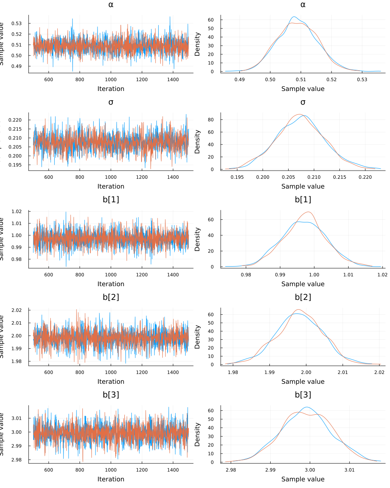

using Turing
using Random
using Distributions
using LinearAlgebra
using Plots
using StatsPlotsBayesian Linear Regression
Illustrated using Julia
An example of using Bayesian methods (via Julia’s Turing.jl) to estimate a linear regression
Load Packages
Generate some fake data
Random.seed!(0408)
n = 1000
𝐗 = randn(n, 3)
β = [1., 2., 3.]
f(x) = .5 .+ x*β
ϵ = rand(Normal(0, .2), n)
y = f(𝐗) + ϵ;Define a Model
@model function linear_regression(x, y)
#housekeeping
n_feat = size(x, 2)
#priors
α ~ Normal(0, 2)
σ ~ Exponential(1)
b ~ MvNormal(zeros(n_feat), 5 * I)
#likelihood
for i ∈ eachindex(y)
y[i] ~ Normal(α + x[i,:]' * b, σ)
end
endlinear_regression (generic function with 2 methods)Compute Posterior
model = linear_regression(𝐗, y)
chn = sample(model, NUTS(), MCMCThreads(), 1_000, 2);Plot Parameter Posteriors
plot(chn)
Predict Values of Y
pred_mod = linear_regression(
𝐗,
Vector{Union{Missing, Float64}}(undef, length(y))
)
preds = predict(pred_mod, chn);
#to get summary statistics
summarize(preds)Summary Statistics parameters mean std naive_se mcse ess rhat Symbol Float64 Float64 Float64 Float64 Float64 Float64 y[1] 5.6876 0.2120 0.0047 0.0040 2131.4185 1.0007 y[2] -1.0132 0.2088 0.0047 0.0050 2045.6712 1.0004 y[3] -3.1168 0.2059 0.0046 0.0039 2026.1454 0.9993 y[4] 4.5125 0.2042 0.0046 0.0047 1994.3306 0.9997 y[5] 2.6687 0.2041 0.0046 0.0036 2064.6256 0.9991 y[6] -1.2255 0.2080 0.0047 0.0049 1836.3394 0.9993 y[7] 2.3067 0.2054 0.0046 0.0039 2075.1743 1.0003 y[8] 1.1287 0.2042 0.0046 0.0039 1929.8026 0.9999 y[9] 0.4400 0.2061 0.0046 0.0041 2109.2564 0.9996 y[10] 6.7965 0.2053 0.0046 0.0047 1746.0770 1.0008 y[11] -3.7930 0.2034 0.0045 0.0048 1820.9121 0.9993 y[12] 0.4814 0.2053 0.0046 0.0046 1868.2305 0.9996 y[13] 2.4322 0.2068 0.0046 0.0045 1941.8888 0.9993 y[14] 0.3437 0.2071 0.0046 0.0048 1761.8573 1.0017 y[15] -0.7060 0.2091 0.0047 0.0046 2053.6154 1.0004 y[16] 0.3729 0.2086 0.0047 0.0048 1927.2731 0.9993 y[17] 1.8546 0.2099 0.0047 0.0047 1810.0899 0.9996 y[18] 2.2985 0.2073 0.0046 0.0045 1978.9502 0.9994 y[19] -0.8137 0.2073 0.0046 0.0047 2090.7345 0.9995 y[20] 4.8043 0.2024 0.0045 0.0048 1878.8739 0.9993 y[21] 3.7083 0.2100 0.0047 0.0052 1885.7547 0.9996 y[22] 0.2769 0.2095 0.0047 0.0036 1944.5012 0.9996 y[23] -3.4487 0.2122 0.0047 0.0054 2100.7819 1.0001 ⋮ ⋮ ⋮ ⋮ ⋮ ⋮ ⋮ 977 rows omitted
Plot posterior distribution(s) of the predictions for the first observation:
y_1 = getindex(preds, "y[1]")
density(y_1.data)
And to get mean predicted values for each observation of y:
mean_preds = summarize(preds)[:, 2]1000-element Vector{Float64}:
5.687584896870903
-1.0131932466821032
-3.116780621735853
4.512509987465371
2.6687246425133946
-1.2254837248151988
2.306673192525782
1.1286618139435005
0.44000862835633064
6.79652703562579
-3.79298730457439
0.48144060256761656
2.4321882922004816
⋮
-3.662775430736099
0.7859815782511625
-3.5565609003804592
-0.9696845244200145
0.82043625177212
4.348165410409958
1.9125271244452688
1.072526007780797
-7.133862685203614
-6.206271121676054
-7.631370737446044
0.7668219857089003